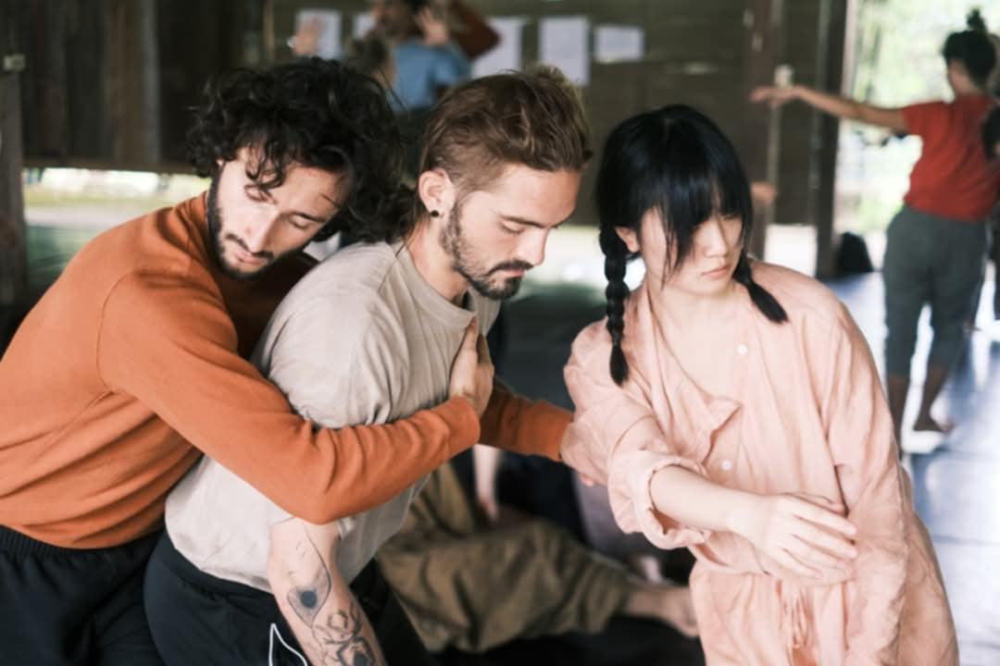

A somatic Contact Improvisation workshop moving from touch through falling into evolving directions in space.

Flowing in, flowing out: the membrane becomes a dancing boundary between self, space and partner.
The Practice
Cellular touch arises from the awareness of semipermeable membrane layers, which are responsible for our form and organization. Transitional fluids pass, are received and exchanged through a quality of dance that facilitates the exchange between and within us.
Cellular touch is made possible when we perceive the movement of fluid in and out of a membrane.
Flowing in comes with a sense of self-fulfillment until the saturation of our internal structure, while preserving its flexibility and reliability.
Flowing out allows a sense of Release into Gravity & Space (while continuing sensing the anchor to the ground, through the Center connection and extended reach of the 'roots')
Research Fields
01
Flowing in: sensing fullness, stability and flexibility from within.
02
Reading superficial and deep fascia as a language of local and extended stretch.
03
Noticing familiar patterns and letting tiny gestures grow into new movement pathways.
04
Yielding into the support of the earth, partners and the shared body.
05
Translating forward energy into rotation and using the geometry of shared movement.
06
Pendulum motion, trios and duets as invitations to expand trust and space.
Flowing in / Flowing out
Holding together is not holding on. We practice receiving, yielding, expanding, anchoring back into the earth.
Facilitator
Contact Improvisation · Somatic research
Valentyn is a Ukrainian-Canadian somatic therapy practitioner, spoken word and movement artist. His work integrates Polyvagal theory, Deep Tissue Massage, and poetry of being an active body-mind connected system.
His approach to Contact Improvisation lies in the root of introspection, contemplation & fundamental feeling of honesty, inclusivity & mutual care.
“When we pay attention to tiny gestures, they can grow and become pathways we have not expanded into before.”